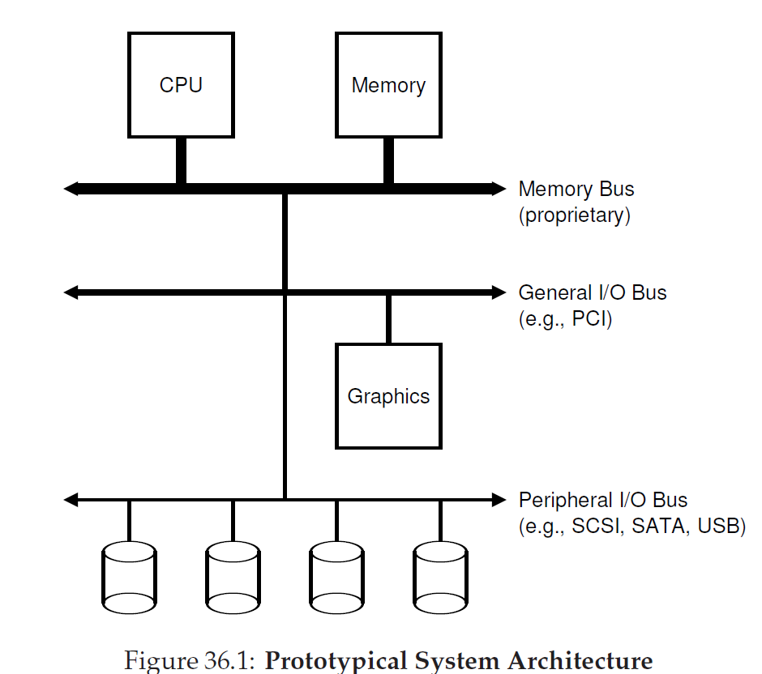
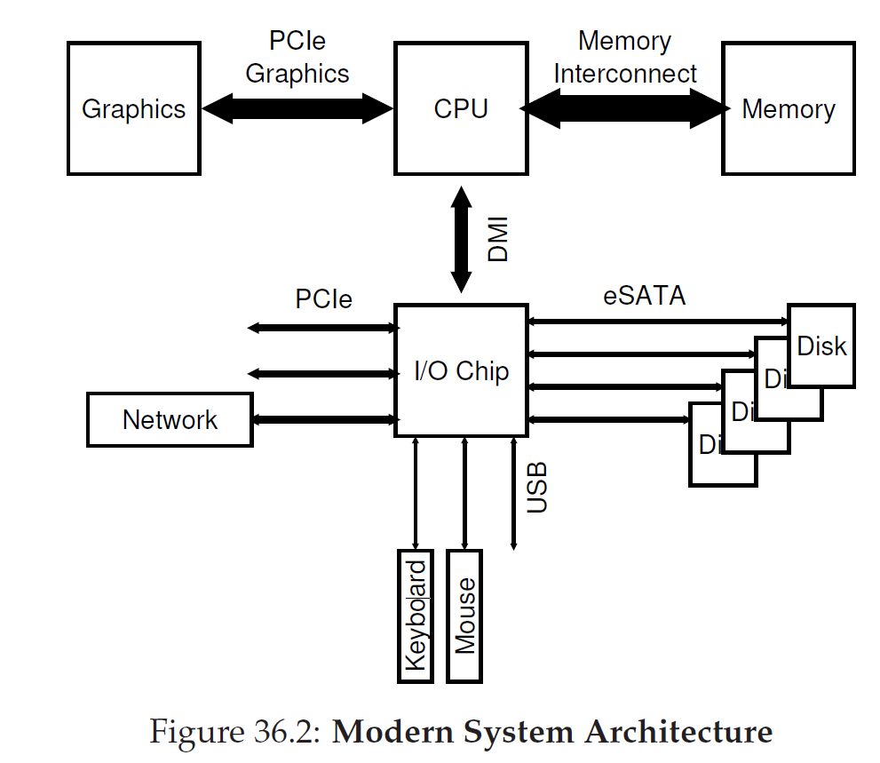
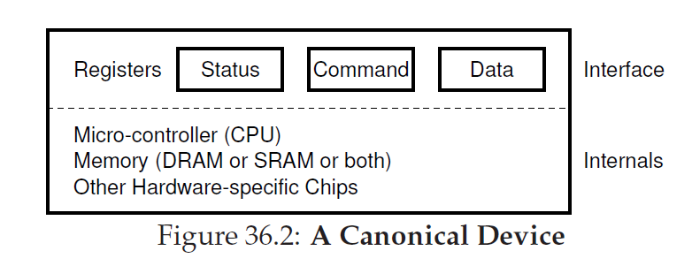
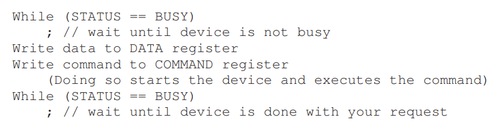
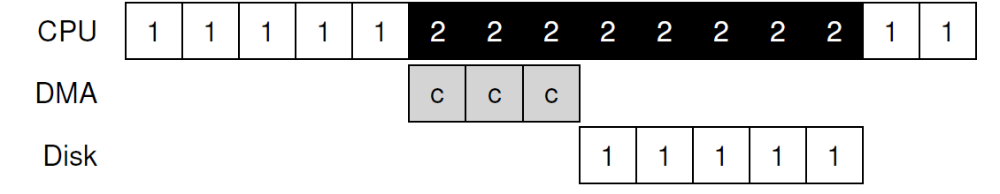

System Architecture
 A Canonical device
硬件接口 + 内部结构
A Canonical protocol
如上图，一个I/O设备的寄存器分为三类：状态寄存器、控制寄存器、数据寄存器。
一种典型的协议如下： 
对于第一步的while循环，我们称为polling the device (轮询)，在第二步的写数据的时候，如果有main cpu的参与,即称为是programmed I/O(PIO), 即通过CPU执行I/O端口指令来进行数据的读写的数据交换，
Lowering CPU Overhead With Interrupts
为了避免PIO模式下，cpu处于轮询状态而导致资源的浪费，可能有以下几种措施：
- 加入中断操作（但如果device执行操作很快，加入中断反而可能是效率下降）
- （hybrid，如无法确定device速度）先轮询一会，如果没结束则执行中断
More Efficient Data Movement With DMA
DMA(Direct Memory Access)并不负责与计算机系统外的I/O，它的出现主要是为了解决设备访问速度慢的一个缺点：试想我们希望从磁盘中读出海量的数据。
DMA设备可以看成是只执行memcpy操作的设备
To transfer data to the device, for example, the OS would program the DMA engine by telling it where the data lives in memory, how much data to copy, and which device to send it to. At that point, the OS is done with the transfer and can proceed with other work. When the DMA is complete, the DMA controller raises an interrupt, and the OS thus knows the transfer is complete.

Methods Of Device Interaction
how the OS actually communicates with the device
来源：jyy讲义
- 端口I/O (Port IO, PIO)，相当于是为I/O设备提供了一个单独的地址空间，通过读/写端口的方式实现设备控制。通常，一个I/O设备的寄存器分为三类：状态寄存器、控制寄存器、数据寄存器。顾名思义，我们可以通过控制寄存器实现设备控制(例如设置设备的模式等)，从数据寄存器读写数据，并且读取状态寄存器来查看设备执行命令的状态。（教材上写的是IO instruction）
- 内存映射I/O (Memory-Mapped I/O, MMIO)。给特定的内存地址赋予特殊的含义，从而读/写内存地址就能实现设备的访问。在PA中，显存就是通过这种方式实现的。一方面，内存映射I/O完全可以用来实现状态/控制/数据寄存器，另一方面，在设备从外部看来是一段连续数据时(例如显存)，MMIO能减少I/O指令的数量。
Fitting Into The OS: The Device Driver
device driver(设备驱动程序): 用于对设备进行抽象使得更加上层的部分（通常为文件系统）能够以统一的接口来访问这些设备, 设备驱动程序会将对这些接口的调用翻译成设备的指令发送给设备，并等设备完成.
设备驱动层帮助我们屏蔽了底层设备的具体实现细节(例如寄存器的含义)。同理，如果我们想创建“虚拟”设备，也是非常容易的，只需要为它编写一个驱动程序即可，实现设备的读接口。Linux系统中就有一些虚拟的设备，如/dev/random, /dev/null